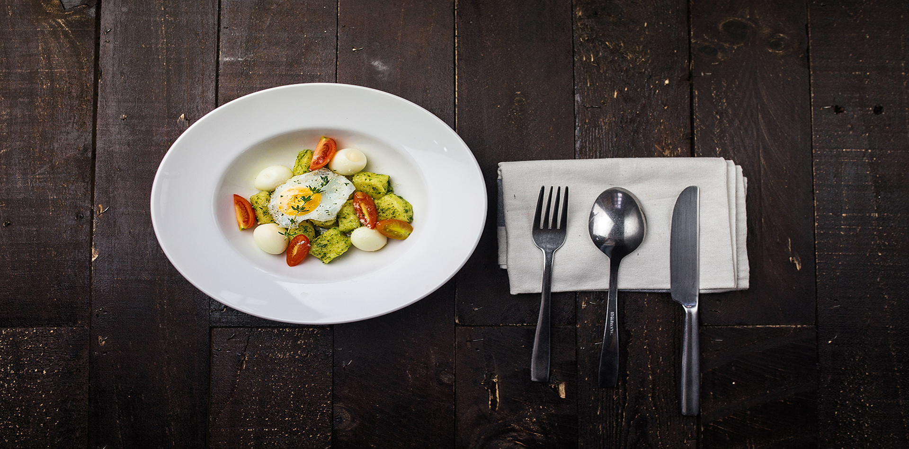
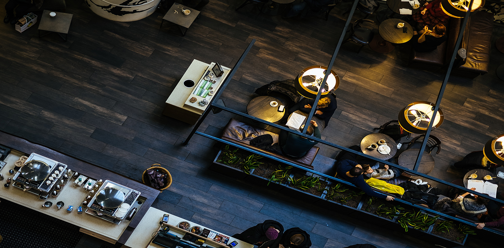
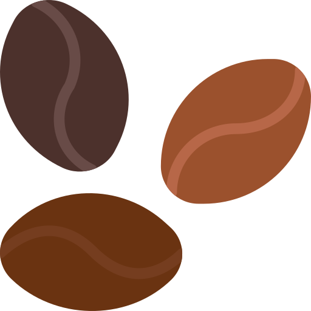

Logo
About us
關於我們
Latest News
最新消息
Menu
菜單
Location Map
位置
Contact Us
聯絡我們
咖啡 & 鬆餅
Coffee & waffle
咖啡（英語：coffee）是採用經過烘焙過程的咖啡豆（咖啡屬植物的種子）所製作沖泡出來的飲料。
餐點
Meals
咖啡（英語：coffee）是採用經過烘焙過程的咖啡豆（咖啡屬植物的種子）所製作沖泡出來的飲料。
咖啡廳景象
cafe scene
咖啡（英語：coffee）是採用經過烘焙過程的咖啡豆（咖啡屬植物的種子）所製作沖泡出來的飲料。
關於我們
About us
Sugar Bar
咖啡豆是咖啡屬植物的種子，咖啡屬植物的果實大小類似櫻桃，咖啡豆即為其中的核果。將咖啡豆烘焙加工後再磨碎成咖啡粉，即可烹製咖啡。 阿拉比卡種75-80％ 和羅布斯塔種20％ 兩個主要的經濟品種阿拉比卡種的咖啡因含量約為0.8-1.4%阿拉比卡種75-80％ 和羅布斯塔種20％
